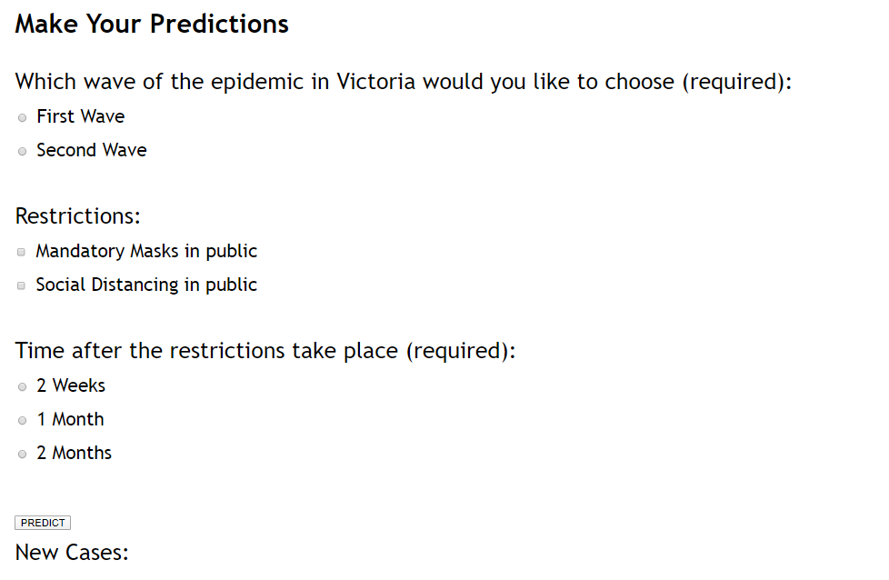

Description (Story)
How it began
The project began as one of several proposed ideas that was brought forward at the first Alpha Builders team meeting. The idea originated as having an interactive map to view COVID-19 cases in selected areas around Melbourne and greater Victoria. Everyone from Alpha Builders decided to work on a project involving gathering data about COVID-19 within the Victorian region and to set up an interface where it was easy for people to access information about COVID-19 in the area they live and surrounding suburbs. This project is important to us all as we are living through the COVID-19 pandemic and it is something that we are directly impacted by. In the COVID-19 environment it is good to have as many resources as possible to help inform, educate and keep people up to date with related news and COVID-19 data. Our project aims to create something that is like a one stop shop for COVID-19 news and resources.How it progressed
The project evolved with the help of Dr. B and Ivan Sun, who assisted us in exploring other ways data could be put onto a website so that there is more "added value" for users coming to a COVID-19 website. The first version of MVFs were MVF1 Interactive Map, MVF2 COVID-19 Cases Presentation, MVF3 Chatbot, MVF4 COVID-19 Trend and MVF5 RSS Feeds and an initial EVF1 of Personalised Data on an RSS feed. MVF1 was established quickly. MVF 2 evolved into Contact Tracing, MVF 3 was established quickly, MVF 4 concept idea was solidified and RSS Feed has evolved into Social Feeds like local COVID-19 Twitter feeds. The EVFs further evolved into three, with EVF 1 Regional RSS Feeds, EVF 2 COVID-19 Cases Presentation and EVF 3 Testing Facility Locations.How our project progressed compared to our plan
Alpha Builders have been using Trello for the duration of the course and as such, everything that has been uploaded to Trello can be looked back on accurately, as everything has time stamps and is categorised.Changes
The initial concept which was developed from Assignment 1 is a project that " The Alpha Builders would like to construct a website that contains COVID-19 Data from the following areas; Mitchell Shire, Hume, Yarra Ranges, Wyndham, Cardinia and the Morning Peninsula." These regions are the areas that surround the Melbourne CBD area, and these were the areas that went into lockdown." The interactive map that was developed for Assignment 2 has a greater search area, giving results for the entire state of Victoria. So, this is one example of the initial concept changing.MVF1 Interactive Map - Things that went according to plan (PUT THIS IN PROGRESS)
The Interactive map concept stayed true to the original idea, but the search area that was created was much broader than originally designed and anticipated. The initial zones where closer to the CBD and surrounding suburbs, but Yuxiang built a search area that covered Victoria - which is great. It was more than what the group had initially proposed. There is a search bar at the top of the page which allows users to enter a post code and then get results within that radial area. There is a drop-down button at the bottom which shows "Total cases" and it can also show the other option is "New cases today". The coloured markers change accordingly to correspond with the selected drop-down option. Users have existing map functionality like zooming in and out, panning, selecting between "Satellite" and "Map" views.(Insert Image)
Things that did not go according to plan
Reshuffling of some MVFs and EVFs.The below diagram shows Alpha Builders the first version of the MVF's, the second version of the MVFs and the EVFs. From this image, the Interactive Map stayed as MVF1, MVF2 was originally COVID Cases Presentation which became Contact Tracing. MVF3 stayed as the Chatbot. MVF4 stayed as COVID-19 Trend and MVF5 stayed as RSS Feed. One other change to note is that the EVF2 was initially Contact Tracing but that was swapped with the original MVF2. These changes were made after being discussed as a team where team members were identifying certain MVFs as more challenging and proposing some reshuffling to occur.
(Insert Image)
Here are two ideas that were in the original line up to see if they could be approved for the first round of ideas that were presented to Dr. B. and Ivan Sun. The first idea is a COVID-19 forum style discussion board. This idea was discouraged as this feature can be implemented dynamically in the form of a Chatbot.
The next idea was to have a "Health Code" within their mobile devices. This idea initially did not get developed as an MVF but possibly going to be used for an EVF. As shown in the previous image, this idea was not pursued further.
The images below show the different stages of development of the viCOVID-19 website, ranging from the
initial
wireframes to the first version of the viCOVID-19 website which was done in Adobe XD (as opposed to
Figma for
the second version). From these images it can be seen that the logo has been consistently shown on
the top
left-hand side and the navigation section is on the top. There is a section underneath the logo
called "quick
data" which was an idea to have information identifying total confirmed cases, total active cases
and new
cases in the last 24 hours. The chatbot section appears on the right-hand side but has the panel
popping out
from the right-hand side. This evolved to having the panel pop out in a downwards direction from a
tab located
under the navigation bar on the right-hand side. The wire frame diagrams show the news feed located
directly
underneath the navigation section towards the top of the page. This was shown on Microsoft Teams and
discussed
with a suggestion to move the news feed to the left-hand side of the screen. This can be seen as a
small dark
grey tab at the bottom of the page. This will pop up from the bottom of the screen in an upwards
direction.
The number of pages on the website and the page titles are the same at this stage.
(Insert Image)
The images above show the different page setups for the viCOVID-19 website proposal. This version was built using Figma as it gives a better interactive preview that can be easily added to web pages for assignment purposes, so that a working prototype can be easily demonstrated.
The number of pages change at this stage and the names of some of them change to accommodate the evolving MVFs and EVFs. As discussed previously, the FAQs page have been replaced with Trend Forecasting on the third page and Contact Tracing on an additional fourth page. The home page has a photo taken in the Footscray area showing a message from a shop in the inner western area of Melbourne. This is a snapshot of the reality of how some small to medium businesses are trying to survive through the economic effects of COVID-19.
Additionally, Alpha builders decided that it was not necessary to have the quick data on the pages as
this is
like repeated information from the map page, which is generating similar information, so the smaller
information panel located underneath the logo in the top right-hand corner. This clears up the space
and makes
the area more user friendly and less cluttered.
(Insert image)
Everyone's MVFs have been incorporated into the prototype layout. The RSS/Social feed and chatbot
positions
have not changed and remain on the home page. The interactive map with the combined "Testing
Facility"
locations for EVF3 are included. See below how the "Testing Facility" has been constructed with
scrolling for
locations.
(Insert Image)
In summary, the project has evolved into a website and the main five features will be a RSS Feed section, a chatbot section, an interactive map with a search bar for postcode searches and a drop down toggle button to show "Total cases" in an area and "New cases today". There is a trend forecast page where a user can enter their location, a start date and selectable restrictions via checkboxes with slider controls for the amount of days for restrictions and the predictions. The last feature is to have contact tracing where people will need to register their details and then be able to login. Details of a user's health will assist in generating data to potentially show individual user data in their immediate area. The EVFs are the Regional RSS Feeds, COVID Cases Presentation and Testing Facility Locations.
Outcomes to Date
MVF1 & EVF3
The followings have been completed:- The Interactive Map and the Testing Facility Location functions
- Registration, login functions, download map data function
- The dynamic chart
- Backend: The MySQL.php and SQL files
[MVF1 Flowchart]
[EVF3 Flowchart]
[The Interactive Map]
[Testing Facility Location]
[Dynamic Chart]
[My SQL]
[My SQL]
MVF2
The Contact Tracing can show the user the risk levels of people around so that the user knows what kind of people he/she is in close contact with. Red means high risk/confirmed case, yellow means maybe in risk of infection, and green means safe and healthy. However, we originally planned to make a login/register feature which would make more sense as all the other people shown on the map are users, and the users fill out information to let the system decide their risk levels, but we weren't able to implement this in the given time frame. [MVF2 Original Flowchart]MVF3
The Chatbot is an interactive interface that answers frequently asked questions about COVID-19 in Victoria. More specifically, it answers questions related to: Restrictions, Staying Safe, Business, General information about COVID-19, Aged Care and Help resources.Figure 1 - Flowchart

Figure 2 - Validation Testing Documents
Validation TestingFigure 3 - Validation Testing Documents
Validation TestingConsent Form
Consent Form Pt.2
Figure 4 - Video
Video LinkMVF4
The Trend Forecast will be able to demonstrate the predictions of first and second waves of the outbreak in Victoria based on user inputs. The output will be the number of new cases after the prediction with a brief reason why. The original plan was to allow users to choose a location (city in Australia), a date with more than two restrictions. However, it was found out that there would be way too many possible outcomes and it was impossible to come up with a way to calculate every single one of them in the given time frame. So, in order to simplify the feature, I have decided to only make the predictions in Victoria. The dates option was changed to which wave of the outbreak to choose from (first wave was in March and second is in July). The restrictions were reduced to two and the number of days after the restrictions take place was changed from 2-365 days to 2 weeks, 1 month or 2 months.  [MVF4] [MVF4 Original Flowchart]MVF5
The RSS Feed is a feed that provides real-time updates about COVID-19 in Victoria. It will output tweets from VicGovDHHS and COVID-19 Australia’s Twitter pages.Figure 1 - Flowchart

Figure 2 - Validation Testing Documents
Validation TestingFigure 3 - Validation Testing Documents
Validation TestingConsent Form
Consent Form Pt.2
Windfall
MVF1 - Interactive Map
The original idea was to complete the MFV1 part by calling Google API to generate an interactive map. In the process of learning, I found a third-party plug-in called BatchGeo, which can automatically generate various maps by importing CSV files. After that, only layout settings and functional debugging are needed to complete our original idea. However, estimation is not “over generous”, because sufficient time is spent on both learning BatchGeo and integrating resource CSV. To be honest, MVF1 took more time than the original estimate time because we also developed other functional charts, databases and servers.MVF2 - Contact Tracing
The quicker way to achieve the aspect of this feature was obviously to seek help from Yuxiang who’s very good at making the map using Batchgeo which he did for MVF1. I had struggled with implementing the map for this feature for 2 weeks but Yuxiang was able to help me out and it was done overnight. As most people had thought, the implementation part takes a lot longer than expected so pushing forward the timeline would’ve been ideal.MVF3 - Chatbot
The original idea was to complete the MVF3 part by web programming and database to generate an interactive Chatbot. In the process of learning, I found a third-party platform plug-in called Tidio, which can automatically generate Chatbot by importing embedded link. After that, what I need to do is creating interactive Q&A , managing them in the system and collaborating it into our project website. Estimated time is about according to the schedule, because sufficient time is spent on researching suitable platform and integrating the logic of Q&A.MVF4 - Trend Forecast
The estimation plan had pushed things a bit too much to the end. Although the plan was based on deadlines of assignments, there was very limited time to make this feature for the final system which led to simplifying the feature into a much simpler version and a lot of the initial ideas had to be removed. Unfortunately, I have not discovered a quicker way to achieve the aspect of this feature. However, if I was to do this again, I would give myself 2 weeks extra to implement it which means finishing assignment part 2, 2 weeks earlier.MVF5 - RSS Feed
The original idea was to complete the MVF5 part by web programming , especially JavaScript to generate a RSS feed for users. In the process of learning, I found it is not hard to embedded RSS into my project, which can automatically generate RSS feed block by importing embedded link. After that, what I need to do is creating personalized RSS feed and collaborating it into our project website. Estimated time is about according to the schedule, because sufficient time is spent on researching suitable platform and integrating the layout between RSS and project website.Extended Viable Features
EVF1 Regional RSS Feed
Description
Regional RSS Feeds is an extension to MVF5: RSS Feed. This feed will provide real-time updates about COVID-19 in the municipalities of Victoria (e.g. Melbourne, Casey, Cardinia, Frankston etc.) The information will be sourced from websites ‘covidlive’ and DHHS’ Victoria. The purpose of these feeds is to inform Victorians about what is happening in their specific areas.
User Stories
- As a parent,
I want to view the RSS Feed for City of Casey,
So I can find other supermarkets in case my preferred one is a hotspot. -
As a business owner,
I want to view the RSS Feed for Melbourne,
So I can plan my business operations based on what is happening. -
As a student,
I want to view the RSS Feed for City of Frankston,
So I know which areas are safe for my exercising.
Validation Testing
- When loading the Regional RSS Feeds page, the RSS interfaces loads with the expected colours and layout
- The RSS Feed displays articles from covidlive and DHHS Victoria
- For each RSS Feed, checking if the feed outputs relevant information for the specified municipality. E.g. The Cardinia feed outputs information about cases, numbers and other news about COVID-19 in Cardinia.
Flow Chart

Design

EVF2 COVID-19 Cases Presentation
Description
This feature is designed to extend the functionality of this website. It shows Victorian New
Cases,
Existing
Confirmed, Total Tested, Cumulative Confirmed, Cumulative Cured and Cumulative Deaths. And the
latest daily
covid-19 cases in other states and territories and any other countries.
The data and content in this section are all extracted from the World Health Organization
andAustralian
official health websites, thus ensuring the authenticity and reliability of the data. Users can
combine the
analysis of MVF4 with the content of this section to get a general understanding of the trend of
covid-19.
User Stories
- As an international student,
I want to know the current disease situation in my country,
so I know whether I can return to home or not.
- As a resident,
I want to know the number of the latest existing confirmed cases,
so I can know if the disease is still serious.
EVF3 Testing Facility Locations
Description
This part is an additional feature of the interactive map, allowing users to find the location of the covid-19 test in Victoria. Regarding location and working hours data, we grabbed them from the official Victoria website. Regarding the production method, first download the data to the local directory, then use Microsoft excel to organize and export the csv format, then use a third-party software ( batchgeo) to generate a map, and finally embed the generated map link into mvf1. When the user uses this function, if the user wants to find the test location closest to them, they only need to find the test location closest to them through the map, and then click the mark in the map. After that, detailed information about the place, such as address and business hours, will be displayed above the marker on the map.
User Stories
- As a person who feels unwell, I want to find the nearest test location to test, so I can open the map to find the nearest hospital and business hours
- As a tourist, I need to get a nucleic acid test report to go abroad, so I can open the map to find the nearest hospital and business hours
Validation Testing
The verification method of the map is: whether the map can be opened and run normally, whether it can be viewed according to the information, whether it is possible to switch the display data and display the type by color, so that if an error occurs, the verification fails.
Scope Creep
The scope of our project has changed throughout the duration of the project. Some of these changes are:Testing
The team initially planned to create a prototype website and have it tested with 12 ~ 15 unique users. We did not have much time to conduct proper testing because some features were more difficult to develop and therefore took longer than expected. To overcome this, our group had all our features tested individually with different users.EVF1 incomplete
We were not able to develop the Regional RSS Feeds as we found it difficult creating an RSS Feed which can automatically output articles from other websites that do not already have an RSS Feed.Progress
The original plan
| Week | Planned Outcomes |
|---|---|
| 1-2 | N/A - Our group was not established during this time. |
| 3 |
Establish Team Name + Project Start project write-ups:
|
| 4 | Create feature designs with Figma Edit and finalize project write-ups from Week 3 Finalize website designs |
| 5 | Begin Website Development Research:
|
| 6 | Begin coding all features Create final designs on Figma |
| 7 | Conduct testing for all features Begin design documentation |
| 8 | Continue working on Design Documentation Prepare website for user testing |
| 9 | Conduct User testing Compile feedback from user testing Implement changes based on feedback |
| 10 | Finalize changes from Week 9 Create estimation plan for all MVFs Begin Assignment Part 3 |
| 11 | Finalize the product Continue Assignment Part 3 Write-ups |
| 12 | Finalize and publish Assignment Part 3 write-ups Draft presentation scripts Record and compile presentation clips |
Refer to 'Outcomes to Date' to see the outcomes achieved
Changes made to our plan:
- MVF2 and MVF4
- Added EF2 and EF3 to the to-do list
- Testing
Testing
Ramon conducted a user-testing with a university student for the Chatbot and RSS Feed. This has resulted in some changes – Renaming ‘Cases’ to ‘Restrictions’, improving the clarity of the questions and answers, added a new category ‘Help’ and reduced the amount of questions answered.
Yuxiang conducted user-testing with a student from RMIT university. We learned through feedback after the test that some texts were garbled and some typos were also found. We will modify and improve these texts, but the overall test is very smooth, and no major BUG problems have appeared. Regarding time, if we have enough time, we will integrate all the web pages and send them to people in many different fields for testing and feedback. We would get results from people of different ages and different occupations, this may make our project more perfect.
Plans for testing
Our plans for testing had changed throughout the project. Initially, our group aimed to conduct testing with 2~3 users on our prototype website. We ended up testing the features individually with # unique users as we did not have enough time.Our advice
We encourage groups to allocate a time for testing with users and conduct it despite having some components unfinished. This can be very beneficial as feedback from users can identify whether the features successfully fulfill its intended purpose, identify ways it can be improved to be more user-friendly and draw inspiration for alternative solutions that can be implemented. We also recommend doing this as early as possible to allow time for implementing changes.Tools and Technologies
| Technology | Purpose |
|---|---|
| Microsoft Teams | Microsoft Teams is a communication platform which allows groups of users to chat and host meetings online. We used this to discuss questions, concerns and our weekly progress. We also host and record our meetings here. |
| GitHub | GitHub is an online collaboration tool that is used primarily for group assignments involving IT tools. We used this to host our project files and test if our code provides correct outputs. We also used this as evidence for everyone’s individual weekly contribution. |
| Trello | Trello is an online collaboration tool that can be used to organize anything. We used this to organize our project, by creating a Kanban-style board to list tasks that need to be accomplished and keep track of progress. |
| Visual Studio Code | Visual Studio Code is a free code-source editor. We used this to create websites for the assignment submissions and the website for our final product. |
| Lucid Chart | Lucid Chart is a website-based application which allows users to create and share charts and diagrams. We used this to create visual plans and flowcharts for our features. |
| Figma | Figma is a website-based application for creating prototypes. We used this to create draft designs of our features. |
| BatchGeo | The third-party plug-in BatchGeo can better helps complete MVF1 |
| Pagoda Panel | Easy to use Linux/Windows Server Management Panel. We upload the Pagoda panel to the Alibaba server to configure the environment, and then install the database and analyze the website through its private IP site. |
| Alibaba Cloud server | MVF1 can run on the Internet, it has a .com domain name, and the server it uses is provided by Alibaba Cloud Server |
| AdobeXD | Adobe XD is a hybrid website/computer-based application for creating prototypes. We used this to create a first draft of the designs of our features. |
| Google My Maps | Google My Maps is a website for users to customize and edit or add something on their maps. It is mainly used in MVF2. |
| Yuxiang | Ramon | Huiyu | Matthew | Lunke | Qiwen | |
|---|---|---|---|---|---|---|
| Microsoft Teams | 2 | 2.5 | 2 | 2 | 2.5 | 2 |
| GitHub | 2 | 2 | 2 | 2 | 2.5 | 2 |
| Trello | 2 | 2.5 | 2 | 2 | 2.5 | 2 |
| Visual Studio Code | 1 | 2.5 | 2 | 2 | 2 | 2.5 |
| LucidChart | 1 | 2.5 | 2 | 2 | 2 | 2 |
| Figma | 1 | 2.5 | 1 | 2 | 1 | 1.5 |
| Batchgeo | 2 | 1 | 1 | 1 | 1 | 1 |
| Pagoda Panel | 2 | 1 | 1 | 1 | 1 | 1 |
| Alibaba Cloud Server | 2 | 1 | 1 | 1 | 1 | 1 |
| AdobeXD | 1 | 1 | 1 | 2 | 1 | 1 |
| Google My Maps | 1 | 1 | 1 | 1 | 1 | 2 |